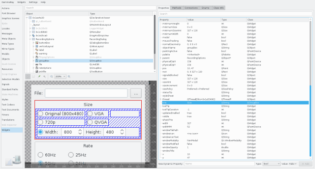

The widget inspector allows you browse the QWidget and QLayout hierarchy of your target application.

Similar to the Qt Quick 2 Inspector, the widget inspector has a zoomable remote view of the selected window to the lower left. It offers:
When selecting a QWidget sub-class in the widget tree, the Paint Analyzer tab is activated in the property view on the right side.
The paint analyzer allows you to inspect every single QPainter command that is executed, and look at the visual result after each step.
The following examples make use of the widget inspector: